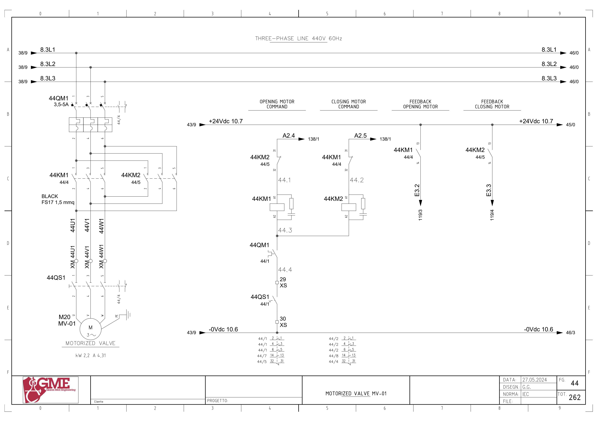
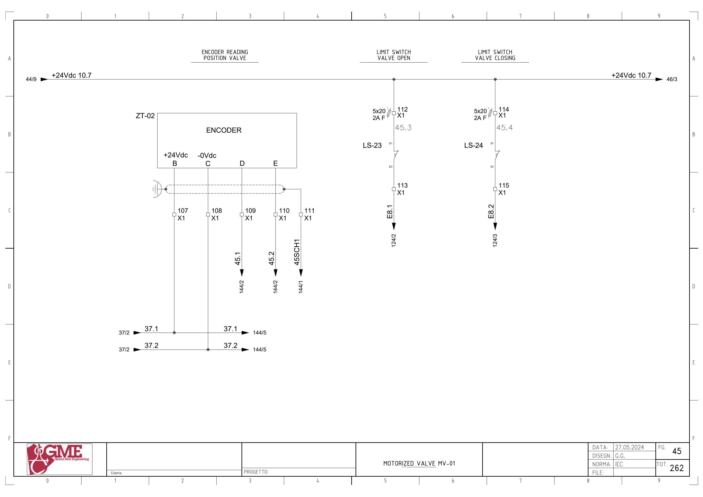
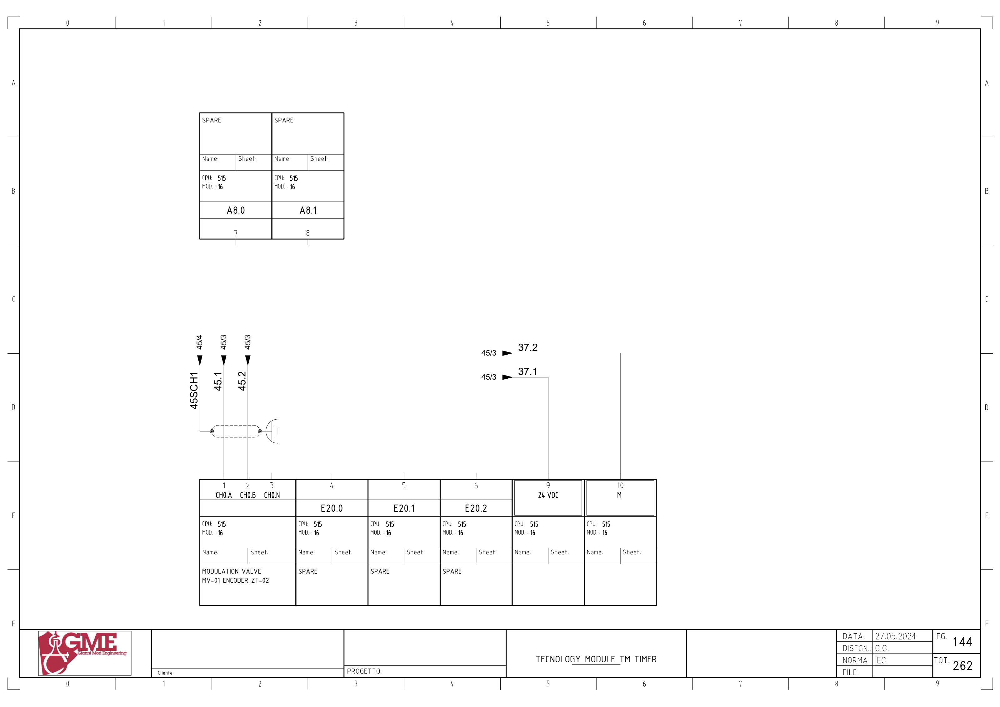

MV01 · 온도 제어 댐퍼 전기 회로 추적
1. 도면의 구성과 진단 경계
FG44: M20 MV01(도면2.2kW·4.31A),44KM1/2 정·역 접촉기,44QM1·44QS1. FG45의 LS23/24와 ZT02 엔코더를 구분하고 FG144의 TM 채널까지 추적합니다.
열기·닫기 접촉기 응답 I3.2/3.3, 끝단 I8.1/8.2, 엔코더 위치는 세 종류입니다. 접촉기 상호 인터록과 PLC의 반대 출력 조건도 다른 층의 조건입니다.
추가 시공도면 · 접속함·케이블·배관 경로 — 승인·현재 설치는 확인 전입니다.
2. 열기 방향 명령
A2.4 ↔ 백업 %Q2.4 / start open mv-01 · FG44 · PDF 45
- A2.4 → 반대 방향 44KM2 NC 접점31→32
- 44KM1 코일A1→A2
- 공통 반환선 → 44QM1 보조접점
- XS:29 → 44QS1 보조접점 → XS:30 → -0Vdc10.6
전달·사용 위치: 원본1702의 모드·반대 출력·리미트·고장·교정 조건과 연결합니다. PLC 조건과 하드웨어 반대 접촉기 인터록을 따로 추적합니다.
원본 심볼 직접 참조: 1083 / simulation / ORef 66 · 1226 / allarms 2 / ORef 365 · 1702 / valve control loop / ORef 175 · 1702 / valve control loop / ORef 181 · 1713 / valve control loop / ORef 1452
3. 닫기 방향 명령
A2.5 ↔ 백업 %Q2.5 / start close mv-01 · FG44 · PDF 45
- A2.5 → 반대 방향 44KM1 NC 접점31→32
- 44KM2 코일A1→A2
- 공통 반환선 → 44QM1 보조접점
- XS:29 → 44QS1 보조접점 → XS:30 → -0Vdc10.6
전달·사용 위치: 원본1702의 모드·반대 출력·리미트·고장·교정 조건과 연결합니다. PLC 조건과 하드웨어 반대 접촉기 인터록을 따로 추적합니다.
원본 심볼 직접 참조: 1083 / simulation / ORef 68 · 1226 / allarms 2 / ORef 366 · 1702 / valve control loop / ORef 173 · 1702 / valve control loop / ORef 183 · 1713 / valve control loop / ORef 1458
4. 열기 접촉기 응답
E3.2 ↔ 백업 %I3.2 / mv01_fbk_opening · FG44 · PDF 45
- +24Vdc10.7 → 44KM1 보조접점13→14
- E3.2 → 해당 PLC 입력 모듈 참조
전달·사용 위치: 방향 접촉기 보조접점 응답입니다. 실제 개도와 끝단 도달은 별도 리미트·엔코더로 확인합니다.
원본 심볼 직접 참조: 복원 LAD에서 이 이름의 직접 참조는 찾지 못했습니다. 내부 Inputs 등의 별도 전달·미해석 참조·현재 프로그램은 확인 전입니다.
5. 닫기 접촉기 응답
E3.3 ↔ 백업 %I3.3 / mv01_fbk_closing · FG44 · PDF 45
- +24Vdc10.7 → 44KM2 보조접점13→14
- E3.3 → 해당 PLC 입력 모듈 참조
전달·사용 위치: 방향 접촉기 보조접점 응답입니다. 실제 개도와 끝단 도달은 별도 리미트·엔코더로 확인합니다.
원본 심볼 직접 참조: 복원 LAD에서 이 이름의 직접 참조는 찾지 못했습니다. 내부 Inputs 등의 별도 전달·미해석 참조·현재 프로그램은 확인 전입니다.
6. 열림 끝단 위치
E8.1 ↔ 백업 %I8.1 / mv01_open · FG45 · PDF 46
- +24Vdc10.7 → X1:112 / 2A F(5×20)
- LS-23 접점11→12
- X1:113 → E8.1
전달·사용 위치: 원본 제어·고장 네트워크의 내부 리미트와 물리 입력의 전체 전달·반전은 추가 확인합니다.
원본 심볼 직접 참조: 복원 LAD에서 이 이름의 직접 참조는 찾지 못했습니다. 내부 Inputs 등의 별도 전달·미해석 참조·현재 프로그램은 확인 전입니다.
7. 닫힘 끝단 위치
E8.2 ↔ 백업 %I8.2 / mv01_close · FG45 · PDF 46
- +24Vdc10.7 → X1:114 / 2A F(5×20)
- LS-24 접점11→12
- X1:115 → E8.2
전달·사용 위치: 원본 제어·고장 네트워크의 내부 리미트와 물리 입력의 전체 전달·반전은 추가 확인합니다.
원본 심볼 직접 참조: 1762 / analog input conversion / ORef 1065
8. 엔코더 위치 채널 · 주소 미확정
45.1 ↔ 백업 주소·채널 오프셋 미확정 · TM 구성/선언 확인 필요 · FG45 · PDF 46
- ZT-02 B(+24V) → X1:107 → 37.1 → FG144 단자9(24VDC)
- ZT-02 C(0V) → X1:108 → 37.2 → FG144 단자10(M)
- ZT-02 D → X1:109 → 45.1 → FG144 단자1 CH0.A
- ZT-02 E → X1:110 → 45.2 → FG144 단자2 CH0.B
- 실드 → X1:111 → 45SCH1 / FG144 실드·접지 표시
- FG144: MOD.16. CH0.N 단자3 연결은 이 도면에 표시되지 않음
전달·사용 위치: 엔코더 읽기·교정·환산 원본을 연결합니다. 주변 E20/21/22의 SPARE 비트는 카운트값 주소가 아닙니다. 실제 TM 구성·채널 주소·DB 대응은 미확정입니다.
위 직접 참조는 복원 원본의 같은 심볼명 위치입니다. 읽기·쓰기 역할, 현재 호출, 현장 사용을 함께 확정한 표는 아닙니다. 원본의 simulation 블록 참조가 있더라도 이번 작업에서 가상 실행·개발·시험은 진행하지 않았습니다.
원본 PLC와 연결
남은 확인과 기록
- 현재 방향별 접점·리미트 정상 극성과 내·외부 인터록 확인
- TM16의 실제 모델·주소·채널 구성과 ZT02 A/B 신호 대조
- TC03 자동제어·수동·교정·고장 경로의 호출·복수 쓰기 확인
- 시공도면 ZT02의 AI 표기와 OEM 엔코더/TM 채널 관계를 설치 변경 이력으로 확인
도면을 함께 확인
FG 44 · 해당 도면 보기

FG 45 · 해당 도면 보기

FG 144 · 해당 도면 보기

| 기록 항목 | 내용 |
|---|---|
| 현장 식별 | 설비 ID / 반·단자대 / 모터·인버터 명판 / 도면 개정 |
| 신호 구간 | PLC 명령 / 단자 / 직렬 접점 / 릴레이 / DI / 응답 접점 / 입력 / 내부 DB |
| 관찰 결과 | 시각 / 운전 모드 / 기준값의 근거 / 관찰값 / 최초 불일치 구간 |
| 복구 확인 | 원인·조치 / 원인 해제 / Reset / 재요청 / 주변 설비 영향 |